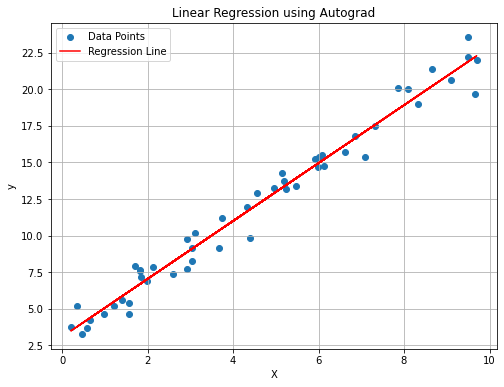

# Import necessary libraries
import numpy as np
import matplotlib.pyplot as plt
import autograd.numpy as ag_np
from autograd import grad
# Generate some random data and form a linear function
np.random.seed(42)
X = np.random.rand(50, 1) * 10
y = 2 * X + 3 + np.random.randn(50, 1) # noisy line
# Define the linear regression model
def linear_regression(params, x):
return ag_np.dot(x, params[0]) + params[1]
# Define the loss function = mean squared error
def mean_squared_error(params, x, y):
predictions = linear_regression(params, x)
return ag_np.mean((predictions - y) ** 2)
# Initialize parameters
initial_params = [ag_np.ones((1, 1)), ag_np.zeros((1,))]
lr = 0.01
num_epochs = 1000
# Gradient of the loss function using autograd
grad_loss = grad(mean_squared_error)
# Optimization loop
params = initial_params
for epoch in range(num_epochs):
gradient = grad_loss(params, X, y)
params[0] -= lr * gradient[0]
params[1] -= lr * gradient[1]
# Extract the learned slope and intercept
slope = params[0][0, 0]
intercept = params[1][0]
# Plot the data points and the resulting line
plt.figure(figsize=(8, 6))
plt.scatter(X, y, label='Data Points')
plt.plot(X, slope * X + intercept, color='red', label='Regression Line')
plt.xlabel('X')
plt.ylabel('y')
plt.title('Linear Regression using Autograd')
plt.legend()
plt.grid(True)
plt.show()